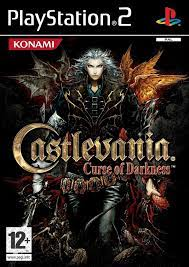

Castlevania: Todos os jogos da franquia em ordem cronologica
Bem-vindo à seção de jogos de Castlevania! Prepare-se para mergulhar em um mundo de ação, aventura e horror gótico. A série Castlevania, criada pela Konami, é uma franquia lendária que tem cativado jogadores há décadas.
Prepare-se para enfrentar uma variedade de inimigos mortais, desde morcegos e esqueletos até demônios poderosos e monstros grotescos. Use seu chicote, conhecido como "Vampire Killer", ou outras armas especiais para derrotar seus oponentes. Além disso, você encontrará itens e power-ups ao longo do caminho que aumentarão suas habilidades e capacidades.
Castlevania: Lament of Innocence - 1095
Castlevania: Lament of Innocence é um jogo eletrônico lançado para o console PlayStation 2, da Sony, sendo também o primeiro jogo da série Castlevania lançado para tal console, e o terceiro a possuir gráficos tridimensionais. Foi primeiramente lançado no Japão e América do Norte em 2003, e na Europa e Austrália em 2004. Cronologicamente, Lament of Innocence é o primeiro título da franquia, sendo ambientado em 1094 e focando no eterno conflito entre os caçadores de vampiros do clã Belmont contra Dracula, o vampiro imortal. Lament of Innocence apresenta Leon Belmont, que busca sua noiva sequestrada no castelo de Dracula.
Lament of Innocence recebeu críticas geralmente positivas, sendo elogiado como um jogo agradável, mas não complexo.
Historia
O objetivo de Lament of Innocence é levar o protagonista Leon Belmont através do castelo cheio de monstros até encontrar Sara Trantoul, sua amada sequestrada. A exploração do castelo é aberta, envolvendo quebra-cabeças, itens escondidos, salas e chefes. Uma sala perto da entrada do castelo contém portais para cinco áreas principais, os quais são acessíveis desde o início. Depois de Leon derrotar o chefe de cada área, a área final torna-se desbloqueada. Restauradores de saúde e itens para melhorar as estatísticas de jogo, tais como resistência e defesa podem ser comprados com o dinheiro do jogo na loja de Rinaldo, perto do castelo.
Como arma principal, Leon possui o chicote Whip of Alchemy, entregue por Rinaldo, alquimista e lojista próximo ao castelo. Mais tarde, Leon pode adquirir mais três chicotes, cada um guardado por um chefe elemental: o Ice, Lightning, e Fire Elemental entregam chicotes dos seus respectivos elementos. Perto do fim do jogo, o chicote Whip of Alchemy se transforma no famoso e destrutivo Vampire Killer. Além disso, Leon pode utilizar uma de suas cinco sub-armas: uma faca, um machado, uma cruz, um cristal e água benta. Combinando-as com uma das sete esferas adquiridas após matar um chefe central, Leon pode realizar um ataque especial poderoso que varia de acordo com a esfera e sub-arma. Durante o curso do jogo, ele vai aprender técnicas especiais e ataques mágicos também.
Dois personagens adicionais podem ser desbloqueados: uma criatura com cabeça de abóbora e Joachim, um vampiro que apareceu no início do jogo como um chefe. A abóbora faz uso do chicote de Leon como arma principal e usa apenas uma sub-arma. Ela tem todas as técnicas de Leon, assim como causa mais dano do que ele. Já Joachim usa como arma cinco espadas espectrais. Ele não tem um inventário, nem a capacidade de usar relíquias e itens de compra da loja de Rinaldo. No entanto, Joachim tem acesso a dois ataques mágicos muito fortes no lugar de sub-armas
Castlevania: Legends - 1450
Castlevania Legends é o terceiro e último jogo da série Castlevania lançado para Game Boy. Foi lançado no Japão em 27 de novembro de 1997, e na América do Norte em 11 de março de 1998. O jogador controla a personagem chamada Sonia Belmont, começando com três vidas, que quando perdidas o jogo termina; mas um jogador pode continuar do começo do último estágio que ele esteve. Existe também uma tabela que sumariza quantos golpes, quanto de dano e quantos inimigos o jogador derrotou. O jogo não faz uso de armas secundárias, ao contrário da maioria dos jogos de Castlevania, dependendo bastante do uso de magia, a qual é uma característica única. O sistema de magias usado depende de cinco "Soul Weapons", que incluem Fogo, Gelo, Santo, Vento e Mágico. Corações podem ser usados para adquirir novas armas. Sonia também pode entrar no modo "Burning Mode", onde ela se torna invencível, move-se mais rápido e possui ataques mais poderosos, embora este modo só possa ser usado uma vez por vida ou estágio.
Historia
A história começa na Transilvânia no ano de 1450. Sonia Belmont, que foi a primeira Belmont (não na cronologia oficial da série) a enfrentar o Dracula. Sonia nasceu com um dom sobrenatural que permitia que ela enxergassem seres das trevas que pessoas comuns não conseguiam ver. Aparentemente, seu avô tinha este mesmo dom, e decidiu treiná-la no uso do chicote, para que um dia ela pudesse enfrentar estas criaturas. Aos 17 anos, Sonia conheceu e se apaixonou por Alucard, que tramava a morte do próprio pai, o Conde Dracula, por não concordar com o reinado de terror que este impunha aos habitantes da Transilvânia. Um dia, Alucard partiu e Sonia decidiu ela mesma invadir o castelo do vampiro e enfrentá-lo. Em certo ponto do jogo, Alucard enfrenta Sonia, com o pretexto de que ele não deixará ela prosseguir, pois é muito perigoso — a menos que ela o derrote e mostre do que é capaz. Após ser derrotado, Alucard entra voluntariamente em torpor e Sonia parte para destruir Dracula. Após a derrota de Dracula, ele jura a Sonia que enquanto o mal existir no mundo, ele será ressuscitado; ela responde jurando que a sua família irá sempre derrotá-lo. No fim do jogo, Sonia dá à luz Trevor, herói de Dracula's Curse, dando, enfim, um começo à história.
Castlevania III: Dracula’s Curse - 1476
Castlevania 3: Dracula's Curse é o terceiro título da série Castlevania produzido para o Nintendo Entertainment System. Ele foi publicado pela Konami no Japão em 1989 e na América do Norte em 1990. Na Europa, foi distribuído pela Palcom Software, em 1992. Posteriormente, foi relançado via Virtual Console. O jogo tem como protagonista o ancestral de Simon, Trevor Belmont, sendo situado 215 anos antes dos eventos ocorridos em Castlevania e Castlevania II: Simon's Quest. Uma mini-série animada original da Netflix foi baseada neste título e lançada em julho de 2017, intitulada Castlevania.
Historia
O ano é 1476, Conde Dracula começa a devastar a Europa com um exército de monstros. O caçador de vampiros Trevor Belmont, atual portador do chicote sagrado Vampire Killer, é chamado de volta à Valáquia pela Igreja Católica, onde anos antes sua família foi exilada por serem temidos devido aos seus poderes sobre-humanos. Há mais três personagens que podem se unir a Trevor em sua missão: Sypha Belnades, uma jovem sacerdotisa com vários poderes mágicos e que se disfarça de homem até o final do jogo; Grant DaNasty, um ágil pirata com a habilidade de escalar paredes e teto; e Alucard, o filho de Dracula, um dampiro com habilidades de disparar bolas de fogo e se transformar em morcego. O final do jogo varia de acordo com qual personagem ajuda Trevor a destruir Dracula.
Trevor e seus companheiros cruzam todo o território da Valáquia, derrotando diversas criaturas e o próprio Conde Dracula no final. Quando este é derrotado, Alucard cai em um torpor auto-induzido, que dura 320 anos (até Castlevania: Symphony of the Night). Grant DaNasty ajuda Trevor na reconstrução de Valáquia, agora que ela está em paz. Sypha pede Trevor em casamento e os dois dão continuidade ao clã Belmont, que volta a ter o respeito que merece.
Castlevania: Curse of Darkness - 1497
Castlevania: Curse of Darkness, conhecido no Japão como Akumajō Dracula: Yami no Juin (悪魔城ドラキュラ 闇の呪印 Akumajō Dorakyura: Yami no Juin?, lit. Castelo Demoníaco Dracula: Maldição das Trevas), é um jogo eletrônico desenvolvido pela Konami. Foi lançado para PlayStation 2 e Xbox em todas as regiões, exceto no Japão, onde o jogo estava disponível apenas para PlayStation 2.
Historia

Mesmo sendo um jogo 3D como Lament of Innocence, Curse of Darkness difere de seu antecessor em vários sentidos. O jogo inclui um estilo de jogabilidade de ação-aventura mais complexo, assemelhando-se mais a Symphony of the Night e Aria of Sorrow. Hector não é um membro do clã Belmont, assim não usando o chicote "Vampire Killer"; ao invés disso, ele possui a habilidade (como Alucard e Soma Cruz) de equipar uma gama de armas diferentes que variam de espadas, lanças e machados a bombas e soqueiras. Contudo, existe um modo de jogabilidade extra que se encontra disponível após o término do jogo que permite os jogadores de jogar como Trevor Belmont, equipado com a "Vampire Killer" e as sub-armas que são facas, machados, água benta, crucifixos e relógio-pára-tempo. O sistema de batalha é de alguma maneira semelhante à de Dynasty Warriors, onde um botão é usado para ataques de seqüência (combos) e um secundário é usado para ataques "finalizantes" mais fortes após ataque(s) normal(is). Ao longo do progresso do jogador pelo jogo, o personagem adquire armas mais poderosas e o número de ataques normais e finalizantes que o jogador pode executar também aumenta, proporcionalmente. Cada tipo de arma diferente possui uma lista de combos distinta que podem ser executados.
Diferindo-se do estilo de acesso de Lament of Innocence, onde o jogador escolhe entre número de estágios distintos todos acessíveis de um corredor central, Curse of Darkness traz um mundo dentro do jogo com um mapa completo, exatamente como em Symphony of the Night. Contudo, o jogo ainda usa a mesma mecânica de mapas de estágios de Lament of Innocence, ao contrário dos gráficos quadriculados dos Castlevanias em 2D. Ademais, uma notável diferença no design dos estágios é que a maior parte do jogo não se passa no castelo do Dracula, sendo assim fazendo com que o jogador explore florestas, montanhas, templos, aquedutos, ruínas e vilas da Europa. O jogador também será auxiliado por "Innocent Devils" ("Demônios Inocentes"), que são criaturas demoníacas desenvolvidas por Hector através da habilidade de Devil Forgery ("Forjamento de Demônio"), com o objetivo de derrotar inimigos e solucionar puzzles dentro do jogo e que podem ser comparados a familiars. Os Innocent Devils (comumente referidos como I.D.'s) possuem seis tipos.
Fairy Type (fada): Ajuda Hector com cura.
Battle Type (batalha): O I.D. mais forte fisicamente. Possui a maior quantidade de pontos de coração.
Bird Type (ave): I.D.'s que lutam contra outros monstros voadores.
Mage type (mago): Ataca com magia de longa distância.
Devil Type (demônio): O tipo extremo de Innocent Devil.
Pumpkin Type (abóbora): Só incluído para humor, apesar de eles aumentarem significantemente o dado de sorte.